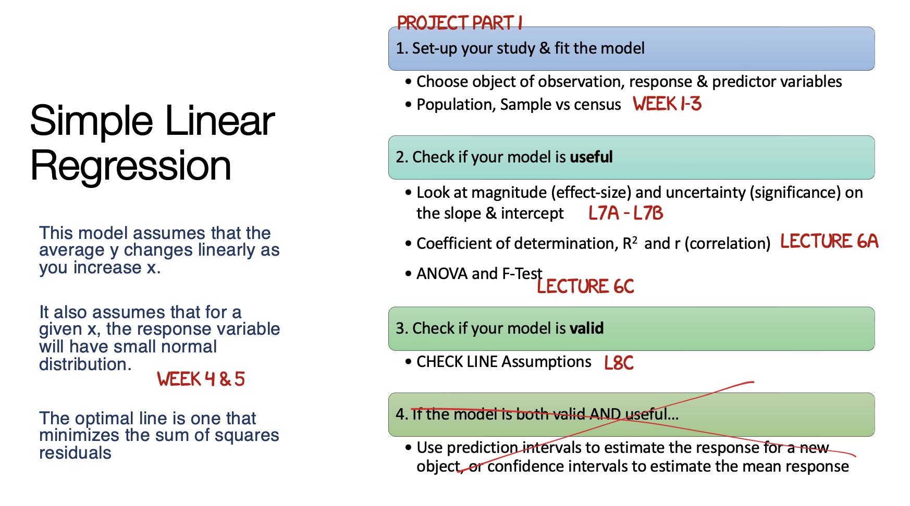

Project 2
IMPORTANTLY - please complete Project 1 before continuing here.
0.2 Overall aim
The overall aim of part 2 is to show me that you can conduct a basic simple linear regression analysis and communicate the results TO YOUR IMAGINARY BOSS/END-USER. When I say this, I mean this process

Step 1: Set-up
- Re-open your project by EITHER
- Going to your project folder and double clicking on the .RProj
- OR Opening R studio and going to File, Recent Projects, the open the one for your independent research project
- Now go to the files tab and open your lab book RmD file. On the top right, go to the run menu and press Run-All.
- Everything should run without errors. Look at your environment tab and consider renaming your variables if they don’t make sense to you.
Step 2: State your model
I AM LEAVING IT UP TO YOU TO MAKE HEADINGS/SUB-HEADINGS/SUB-SUB HEADINGS AND TO KEEP THINGS NEAT.
Remember that you will get more marks if it’s easy for me to find all the sections of your report output.
In your text, state your response variable, your object of analysis, and a SINGLE predictor variable that you (or your imaginary boss) would like you to test,
Create a professional looking scatterplot with a line of best fit (Tutorial 8) and comment on the form/direction/strength/unusual values (don’t panic if it’s not linear, we will fix post spring break)
Using Tutorial 11, run a simple linear regression model
Using tutorial 11, formally write out the sample regression equation and interpret the slope and intercept for your imaginary boss.
Conduct a hypothesis test (F-test) using ANOVA to assess if your sample suggests that there really is a relationship in the underlying population.. (e.g. what would H0 and H1 be.. see Week 7 and week 8)
Interpret and comment on the R2 value
Interpret and comment on the root mean squared error
Conduct a hypothesis test (T-test) if the INTERCEPT sample is likely to be 0.. (you’re welcome to choose a number other than 0, Tutorial 11, if that’s more interesting to your case study)
Assess the LINE assumptions using Tutorial 11.
Summarise what you have found so far and any concerns.